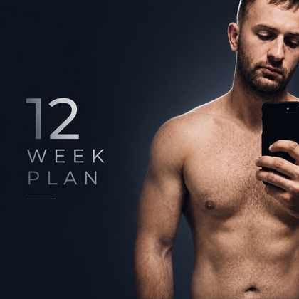

12-Week Cut to 185 lb
Built around aggressive weight loss, high protein, calisthenics, light dumbbells, daily conditioning, and keeping as much muscle as possible while cutting from 220 to 185.

1. Main Target
Estimated starting point: around 23-26% body fat. The 12-week target is 35 lbs down while keeping protein high, training hard, walking/cardio consistent, and adjusting based on weekly averages.
| Body Weight | Likely Look | Estimated Body Fat Range |
|---|---|---|
| 220 lbs | Starting point: thick, somewhat muscular, carrying extra fat | ~23-26% |
| 210 lbs | Noticeably leaner, waist and face starting to change | ~20-22% |
| 197 lbs | Fit-looking if muscle is maintained | ~15-18% |
| 185 lbs | Very lean compared with the start, clearly back in shape | ~11-15% |
2. Daily Nutrition Targets
Calories: 1,900-2,200/dayProtein: 180-220g/dayWater: 100-130 oz/dayDaily weigh-inThe fat-loss rule is simple: you need a calorie deficit. This calorie range is aggressive, so use weekly averages and recovery to decide whether to tighten or ease up.
Food rules
- Build every meal around protein first.
- Use clean carbs like rice, potatoes, oatmeal, fruit, beans, and vegetables.
- Keep fats controlled. They are not bad, but they are calorie-dense.
- Measure creamer. Do not free-pour it.
- Water only besides coffee.
- No soda, juice, random snacking, sweets, late-night calorie creep, or casual bites throughout the day.
Simple daily meal structure
3. Training Overview
This plan avoids heavy weightlifting and uses calisthenics, conditioning, walking/jogging, HIIT, and light dumbbells.
What matters most
- Consistency: doing the work every week.
- Progression: more reps, more rounds, harder variations, shorter rest, or more distance.
- Protein: keeps the cut from turning into muscle loss.
- Calorie control: this is what makes body fat actually come off.
4. Weekly Workout Plan
Monday, Push + Core + 1 Mile
- Push-ups5 sets near failure
- Pike push-ups4 sets, 8-15 reps
- Chair dips3 sets, 10-20 reps
- Plank3 sets, 45-60 sec
- Leg raises3 sets, 12-20 reps
- Crunches3 sets, 20-30 reps
- Walk/jog1 mile
Tuesday, Legs + HIIT
- Bodyweight squats5 sets, 20-30 reps
- Reverse lunges4 sets, 10-15 each leg
- Glute bridges4 sets, 20-30 reps
- Calf raises4 sets, 25-40 reps
HIIT circuit
Repeat 5-8 rounds:
- Mountain climbers30 sec
- Running in place30 sec
- Burpees or squat thrusts30 sec
- Rest60-90 sec
Wednesday, Pull + Core + Walking
- Dumbbell rows with 20s5 sets, 15-25 each arm
- Rear delt raises4 sets, 15-25 reps
- Curls4 sets, 12-20 reps
- Farmer carries4 rounds
- Side plank3 sets each side
- Dead bugs3 sets each side
- Easy walk30-45 min
Thursday, Cardio Day
Walk/jog intervals for 1.5-2 miles.
Friday, Full-Body Circuit
Do 5 rounds:
- Push-ups10-20 reps
- Dumbbell rows15-20 each arm
- Bodyweight squats25-30 reps
- Reverse lunges10 each leg
- Mountain climbers30 sec
- Plank45 sec
- Rest between rounds1-2 min
Saturday, Conditioning Day
- Walk/jog2 miles
- Burpees or squat thrusts5 sets of 10
- Crunches3 sets of 25
- Leg raises3 sets, 12-20 reps
- Plank2-3 sets
Sunday, Rest
Rest or easy walk. Do not turn the rest day into another full workout.
5. Using 20 lb Dumbbells
Use them for controlled tension work. Light dumbbells can still work if the sets are hard and controlled.
Best exercises
- Dumbbell rows
- Goblet squats
- Romanian deadlifts
- Floor press
- Shoulder press
- Curls
- Farmer carries
6. Weekly Progression
| Week | Focus | What to Increase |
|---|---|---|
| Week 1 | Learn the plan | Do not max out every set yet |
| Week 2 | Add reps | Try to beat Week 1 numbers |
| Week 3 | Add volume | Add one extra round to circuits |
| Week 4 | Hit first checkpoint | Aim for roughly 210 lbs by the end of the week |
| Weeks 5-8 | Push conditioning | Increase cardio distance and HIIT output while staying on calories |
| Weeks 9-12 | Final push to 185 | Keep food tight, protein high, steps/cardio consistent, and recovery protected |
7. Expected Results
| Timeline | Expected Scale Change | Target Weight | Visual Change |
|---|---|---|---|
| Week 1 | 2-5 lbs down | 215-218 lbs | Mostly water/glycogen plus some fat |
| Week 4 | 10-12 lbs down | 208-210 lbs | Noticeably leaner |
| Week 8 | 22-25 lbs down | 195-198 lbs | Obvious difference |
| Week 12 | 35 lbs down | 185 lbs | Legit transformation if food is locked in |
8. Daily Checklist
- Hit 1,900-2,200 calories.
- Hit 180-220g protein.
- Drink 100-130 oz water.
- Do the scheduled workout or cardio.
- No liquid calories besides measured coffee creamer.
- No random snacking.
- Weigh in every morning.
- Track the weekly average.